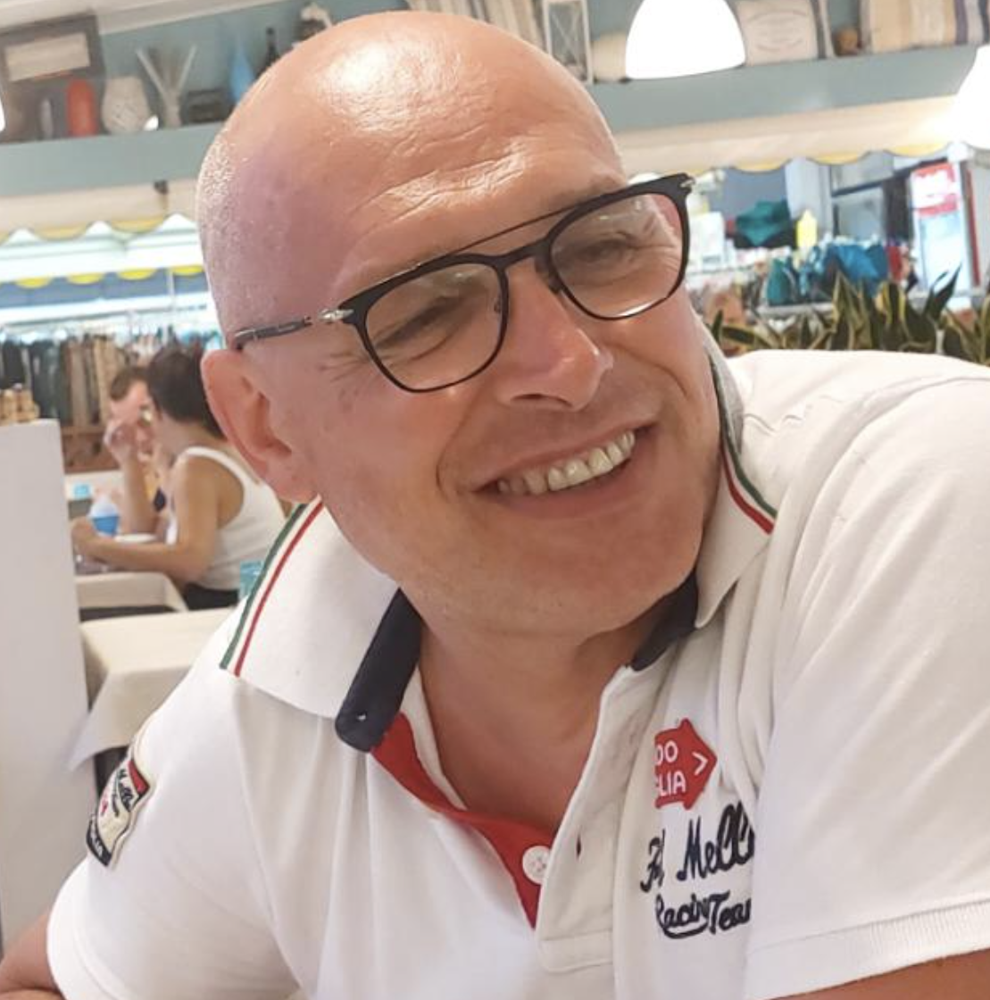

Oltre 30 anni al servizio dell'industria automobilistica e degli elettrodomestici: tecnologia di stampaggio, gestione della produzione, progettazione e avviamento stampi, formazione del personale secondo le tecnologie più attuali.

Un percorso costruito interamente all'interno della filiera plastica: dal reparto tecnologico al coordinamento della produzione, fino alla direzione della progettazione e costruzione di stampi.
Definizione e ottimizzazione dei parametri di stampaggio, qualifica dei materiali, risoluzione di difetti estetici e dimensionali su componenti tecnici ed estetici.
Gestione quotidiana dei reparti di stampaggio a iniezione: pianificazione, turni, efficienza delle presse, rispetto dei target qualitativi e di consegna.
Coordinamento tecnico di più linee produttive, standardizzazione dei processi, introduzione di nuove tecnologie di stampaggio (bi-iniezione, co-stampaggio, gas/acqua assistito, stampaggio di precisione).
Direzione della progettazione, costruzione, collaudo e avviamento di stampi per iniezione, in stretto coordinamento con produzione e qualità.
L'esperienza è maturata principalmente in due settori ad alta esigenza qualitativa:
Componenti tecnici ed estetici in plastica per l'industria automobilistica, inclusi progetti per marchi di fascia alta e sportiva.
Componentistica plastica per grandi elettrodomestici, con elevati volumi produttivi e requisiti estetici e funzionali stringenti.
Supporto diretto a stampatori, costruttori di stampi e aziende manifatturiere su tutta la filiera dello stampaggio a iniezione plastica.
Impostazione e ottimizzazione dei parametri di processo, qualifica materiali, analisi e risoluzione di difetti (ritiri, bave, linee di giunzione, deformazioni).
Organizzazione dei reparti di stampaggio, pianificazione produttiva, gestione turni e risorse, definizione di procedure e standard di reparto.
Analisi OEE, riduzione dei tempi ciclo, riduzione degli scarti, ottimizzazione dei costi di produzione delle presse a iniezione.
Supervisione tecnica della progettazione, costruzione, collaudo (mold trial) e messa a punto industriale di nuovi stampi.
Percorsi formativi teorico-pratici sulle tecnologie di stampaggio più attuali, rivolti a tecnologi, operatori e responsabili di produzione.
Valutazione dello stato dell'arte di reparto o stabilimento, con piano d'azione prioritizzato su qualità, efficienza e organizzazione.
Due percorsi pensati per aziende e professionisti che vogliono crescere nello stampaggio a iniezione plastica.
Percorso completo sulle tecnologie moderne di stampaggio
Per determinare il livello di qualifica di un ingegnere di processo
Nel corso della carriera, Claudio Bragato ha fornito competenza tecnica a primari produttori mondiali di automobili ed elettrodomestici.
Nomi riportati a titolo di riferimento sulla tipologia di collaborazioni; dettagli e referenze disponibili su richiesta.
Una carriera costruita su responsabilità crescenti, dal processo alla produzione, fino alla direzione tecnica degli stampi.
Consulenza tecnologica, gestione della produzione, avviamento stampi o formazione del personale: scrivimi per una prima valutazione gratuita.
Contatti indicativi/segnaposto: da sostituire con i recapiti reali prima della pubblicazione definitiva.